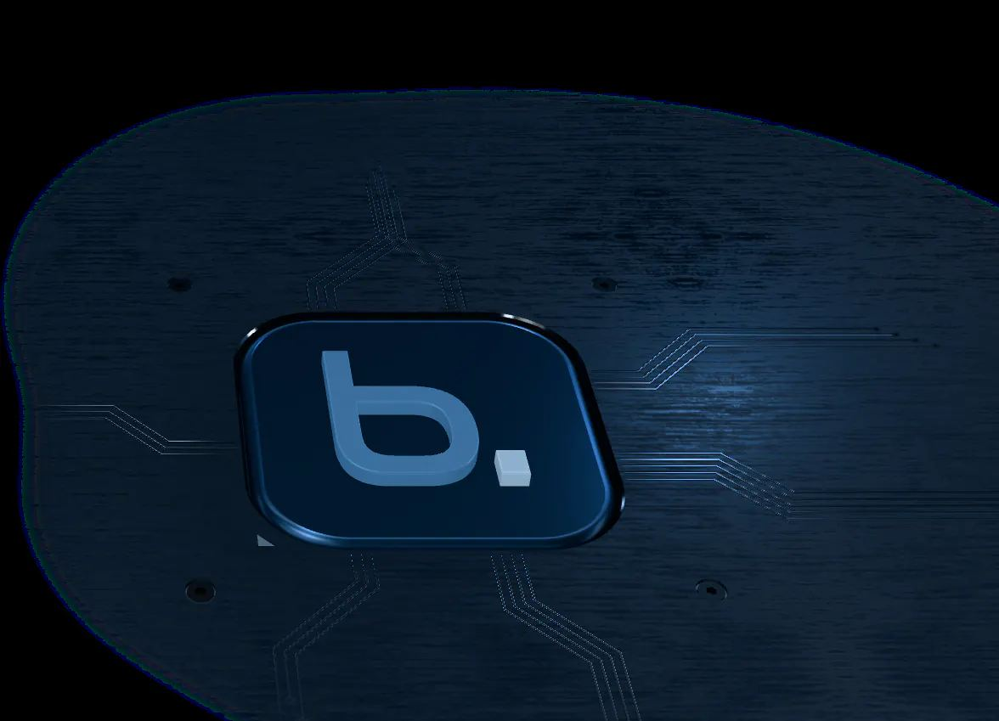
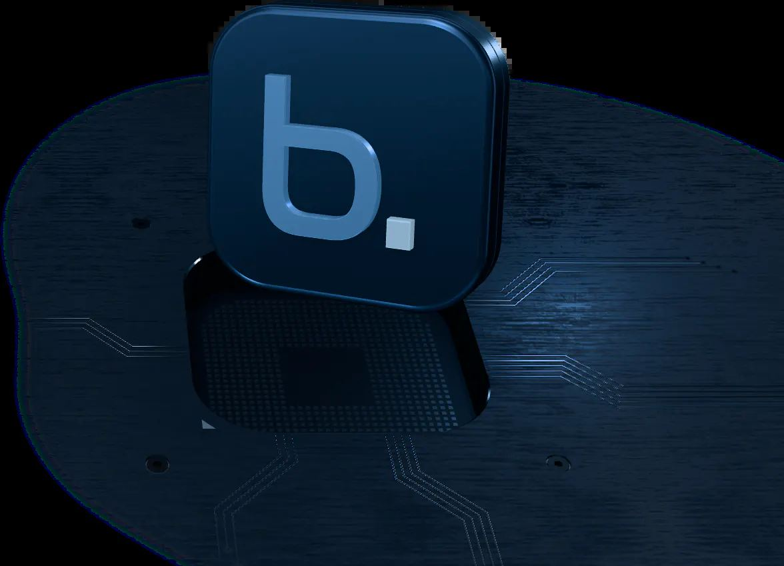
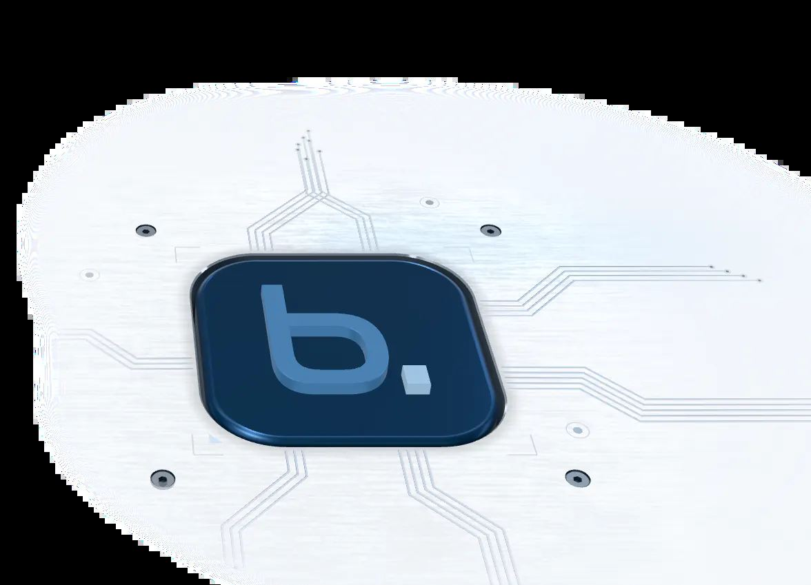

SAP Basis Consultancy · basis.no
SAP Basis Consultancy · basis.no
Customer Portal Talk to us Products All products Hosting & Operations for SAP
Appearance Talk to an engineer Home Products 4 areas · 10 products
SAP systems, Kubernetes applications or integrations. Find the product and operating model that fits your team. Every one is run from our own data centres, by the same engineers.
Request a quote Hosting & Operations for SAP 6 Kubernetes 2 Integration Platform 1 Business Applications 1 01 · Hosting & Operations for SAP



Kort fortalt: hva trenger du?
Beskriv saken, så svarer vi med hva det krever og hva det koster.